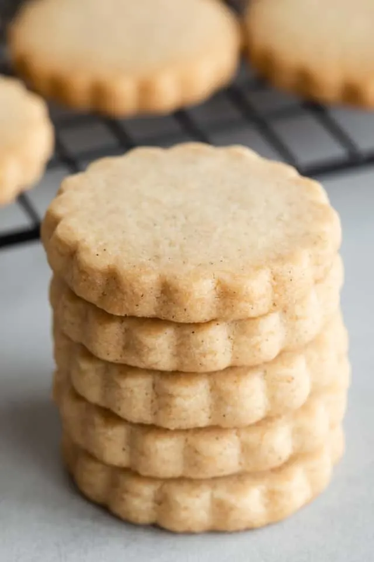

Cardamom Cookies

Description
From The New Cookbook for Poor Poets:
The bon vivant of scandinavia chews cardamom seeds as a breath sweetener. Ground and made into cookies, the seeds loose a share of their cleansing effect. However, these cookies are exceedingly refreshing, as well as quite crisp.
Ingredients
- 1/3 cup shortening
- 1 cup sugar
- 1 egg
- 1/4 cup milk
- 2 tsp lemon juice
- 1 tbsp grated lemon rind
- 2 cups sifted flour
- 2 tsp baking powder
- 1/2 tsp salt
- 1 1/2 tsp ground cardamom
Steps
- Beat together the shortening, sugar and egg.
- Add milk, lemon juice and rind, and mix well.
- Sift together the dry ingredients and stir the dough thoroughly.
- chill and roll a small amount at a time on a floured board.
- Cut with a round cookie-cutter, place on an un-greased pan, and bake for about 5 minutes at 400°.